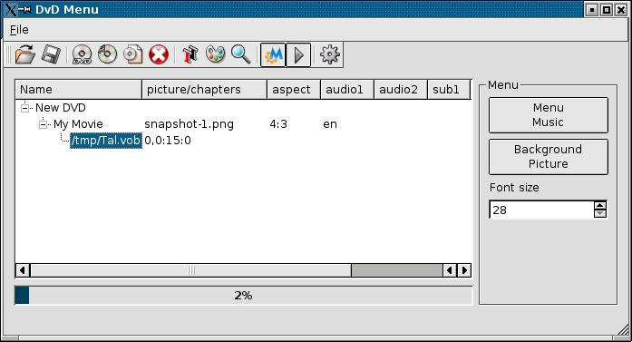

News for release 0.2
I wasn't satisfied with the way that ImageMagick converted my pictures, so I decided to write the conversion with Qt.
The result is that the dependency to ImageMagick is gone, and that you
will get menus that look exactly like the preview. Also it is much
faster.
I also improved the way projects are saved and loaded, though it's not yet perfect, and corrected minor bugs.
History
Though many front-ends to dvdauthor exists and sometimes do a good job
at creating nice dvd menus, I had complaints for every one of them :
- KMediaFactory : the nicest one of all dvdauthor frontends, but it's
painfully slow and you must create chapter menus, and the tool insist
on muxing subtitles itself.
- KDE DVD Author Wizard : a nice one too, but also slow and not very friendly
- QDvdAuthor : a promising tool but overcomplicated
- DVDStyler : a GTK based tool, both complicated and not powerful enough
So my goal was to create a tool that would easily and rapidly make a nice dvd menu.
It works like this :
- You create a new dvd, and choose the temporary directory for it.
- You add a title to the dvd and choose its name, a picture for the
menu, aspect, audio languages (up to 2), subtitle languages (up to 4)
- Then you add the video files to the title and you can specify the chaptering for each file.
- You can also select a background image and a music for the menu.
- Click "Preview" to see what you menu will look like
- Click "Encode" to generate the dvd structure in the DVD directory of the temporary directory.
- Use xine or ogle to preview your dvd and burn it with k3b.
Design is like the dvdaudio tool, here is what it looks like :

And here is what you final menu will look like :
<insert screenshot here>
dvdmenu will generate a four titles menu page. If you have more than
four titles, it will generate a "Next" button to access the second menu.
To ease the creation, I suggest that you prepare snapshots of your movies before launching dvdmenu.
You will find that with this, you only need a few seconds to generate your menu.
Dependencies :
- dvdauthor
- mjpegtools
- netpbm
- Qt
Installation
$ tar zxvf dvdmenu-<version>.tar.gz
$ cd dvdmenu-<version>
$ qmake dvdmenu.pro
$ make
$ make install
Notes :
It's a very early release, probably full of bugs, but it works for me
so maybe it will be usefull to you. As usual, there is no warranty of
any kind !
It only generate PAL menu. But you can add NTSC video files and thus
create a mixed dvd, if your standalone dvd player supports it.
Known bugs :
None at the moment.